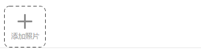
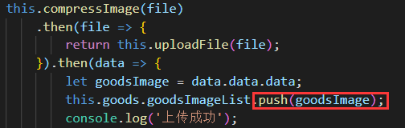
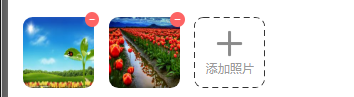

HTML：
使用<input>标签，
type设为"file"选择文件，
accept设为"image/*"选择文件为图片类型和相机拍摄，
设置multiple支持多选。
<div class="add-image">
<input class="file" type="file" accept="image/*" multiple @change="onFileChange">
<div class="add" >
<img src="../../assets/add/icon_addphoto.png" alt>
<p>添加照片</p>
</div>
</div>样式：
设置opacity为0，使用自定义div覆盖于上面
.add-image{
width: 148px;
height: 148px;
position: relative;
.file{
position: absolute;
top: 0;
left: 0;
width: 148px;
height: 148px;
opacity: 0;
}效果：

VUE数据驱动更新前端所展示图片
两种方式：
1、使用本地URL（如果项目需要整理服务器图片地址作为表单提交，则本地URL不可以使用，操作删除不便）
URL.createObjectURL方法可创建一个本地的 URL 路径指向本地资源对象，下面使用该接口创建所选图片的地址并展示。
let url=window.URL.createObjectURL(file)
this.goods.goodsImageList.push(url)2、使用服务器返回路径（缺点：如果上传失败就无法显示）
上传图片请求成功后，服务器返回一个url，使用该url进行字符串拼接，然后加入goods.goodsImageList数组。

纠正图片旋转角度，只要读取图片的 EXIF 旋转标志位，判断旋转角度，在画布上对图片进行旋转后，重新导出新的图片即可。
/**
* 修正图片旋转角度问题
* @param {file} 原图片
* @return {Promise} resolved promise 返回纠正后的新图片
*/
function fixImageOrientation (file) {
return new Promise((resolve, reject) => {
// 获取图片
const img = new Image();
img.src = window.URL.createObjectURL(file);
img.onerror = () => resolve(file);
img.onload = () => {
// 获取图片元数据（EXIF 变量是引入的 exif-js 库暴露的全局变量）
EXIF.getData(img, function() {
// 获取图片旋转标志位
var orientation = EXIF.getTag(this, "Orientation");
// 根据旋转角度，在画布上对图片进行旋转
if (orientation === 3 || orientation === 6 || orientation === 8) {
const canvas = document.createElement("canvas");
const ctx = canvas.getContext("2d");
switch (orientation) {
case 3: // 旋转180°
canvas.width = img.width;
canvas.height = img.height;
ctx.rotate((180 * Math.PI) / 180);
ctx.drawImage(img, -img.width, -img.height, img.width, img.height);
break;
case 6: // 旋转90°
canvas.width = img.height;
canvas.height = img.width;
ctx.rotate((90 * Math.PI) / 180);
ctx.drawImage(img, 0, -img.height, img.width, img.height);
break;
case 8: // 旋转-90°
canvas.width = img.height;
canvas.height = img.width;
ctx.rotate((-90 * Math.PI) / 180);
ctx.drawImage(img, -img.width, 0, img.width, img.height);
break;
}
// 返回新图片
canvas.toBlob(file => resolve(file), 'image/jpeg', 0.92)
} else {
return resolve(file);
}
});
};
});
}现在手机拍照质量越来越高，拍出来的照片多达几M甚至十几M，直接上传原图不合理，容易上传失败，且后台对请求体大小有限制，后续加载图片展示也会变得慢，所以要求我们前端在上传之前进行图片的压缩。
下面函数实现了对图片的压缩，原理是在画布上绘制缩放后的图片，最终从画布导出压缩后的图片。方法中有两处可以对图片进行压缩控制：一处是控制图片的缩放比；另一处是控制导出图片的质量。
// 压缩图片
compressImage(file) {
return new Promise((resolve, reject) => {
const img = new Image();
img.src = window.URL.createObjectURL(file);
img.onerror = error => reject(error);
img.onload = () => {
const canvas = document.createElement('canvas');
const ctx = canvas.getContext('2d');
canvas.width = Math.min(img.width, 200);//控制图片大小
const radio = canvas.width / img.width;
canvas.height = img.height * radio; //等比缩放
ctx.drawImage(img, 0, 0, canvas.width, canvas.height);
const quality = 0.8; //控制输出图片质量
canvas.toBlob(file => {
let files = new window.File([file], 'file.jpg', { type: file.type });
resolve(files);
}, 'image/jpeg', quality);
};
});
},这里有个要注意的点，toBlob之后是一个Blob对象，但是请求要求传入file文件，所以我们要将blob对象转为file
let files = new window.File([this.blob], file.name, {type: file.type})通过FormData创建表单数据，发起 ajax POST请求即可，下面函数实现了上传文件。
// 上传图片
uploadFile(file) {
return request({
method: 'post',
postType: 'file',
url: '//...域名.../upload/comments',
data: {
file: file
}
});
},export function formData(obj) {
let formData = new FormData();
Object.keys(obj).forEach(key => {
let val = obj[key];
val = val == null ? '' : val;
if (typeof val === 'object') {
if (val instanceof window.File) {
formData.append(key, val);
} else {
formData.append(key, JSON.stringify(val));
}
} else {
formData.append(key, val);
}
});
return formData;
}export function request(options) {
return new Promise((resolve, reject) => {
let {
method,
url,
data,
params,
headers = {},
withCredentials = false,
// file || ''
postType = ''
} = options;
const xhr = new XMLHttpRequest();
let sendData = null;
method = (method || 'GET').toUpperCase();
const urlParse = /\?/.test(url) ? parseString(url) : {};
const querys = { timestamp: Math.round(new Date() / 1000), app_id: values.app_id, ...urlParse, ...params };
// 验签
let keys = Object.keys(querys);
keys.push('app_secret');
const api_sign = sha1(keys.sort().map(key => querys[key] || values[key]).join(''));
// console.log('api_sign', api_sign);
headers.api_sign = api_sign;
url +=
(/\?/.test(url) ? '&' : '?') +
Object.keys(querys)
.map(key => `${key}=${escape(querys[key])}`)
.join('&');
xhr.open(method, url, true);
// 处理sendData
// postType file
if (method === 'POST') {
if (postType === 'file') {
sendData = data ? formData(data) : null;
} else {
headers['Content-Type'] = headers['Content-Type'] || 'application/json;charset=UTF-8';
sendData = data ? JSON.stringify(data) : null;
}
}
Object.keys(headers).forEach(key => {
xhr.setRequestHeader(key, headers[key]);
});
xhr.onreadystatechange = function() {
if (xhr.readyState === 4 && xhr.status === 200) {
// options.success(xhr.responseText);
let response = {
status: xhr.status,
data: {}
};
try {
response.data = JSON.parse(xhr.responseText);
} catch (e) {
console.warn('request error:', e);
}
if (response) {
resolve(response);
} else {
reject(new Error('cancel by response interceptor'));
}
}
};
xhr.onerror = reject;
// withCredentials默认为true
xhr.withCredentials = withCredentials;
// console.log(url, headers, sendData);
xhr.send(sendData);
});
}onFileChange(e) {
const files = Array.prototype.slice.call(e.target.files);
files.forEach(file => {
// 本地预览
// let url=window.URL.createObjectURL(file)
// this.photo.push(url)
this.compressImage(file)
.then(file => {
return this.uploadFile(file);
}).then(data => {
let goodsImage = data.data.data;
this.goods.goodsImageList.push(goodsImage);
console.log('上传成功');
// console.log(this.goods.goodsImageList);
}).catch(error => {
console.log('上传失败');
});
});
},